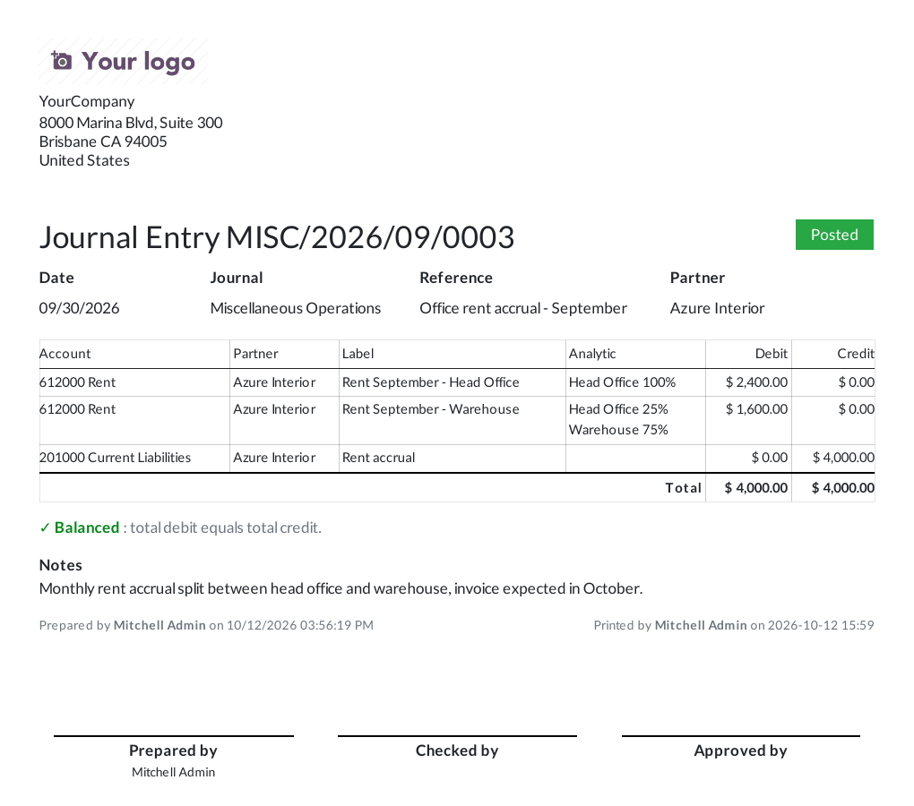
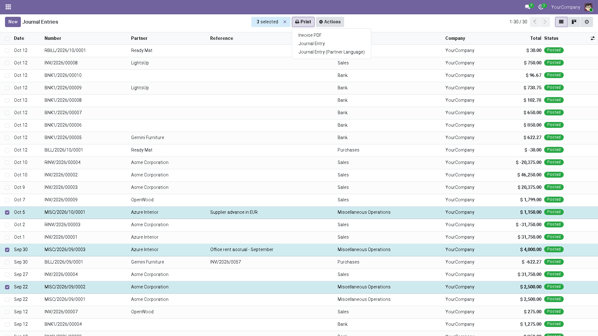
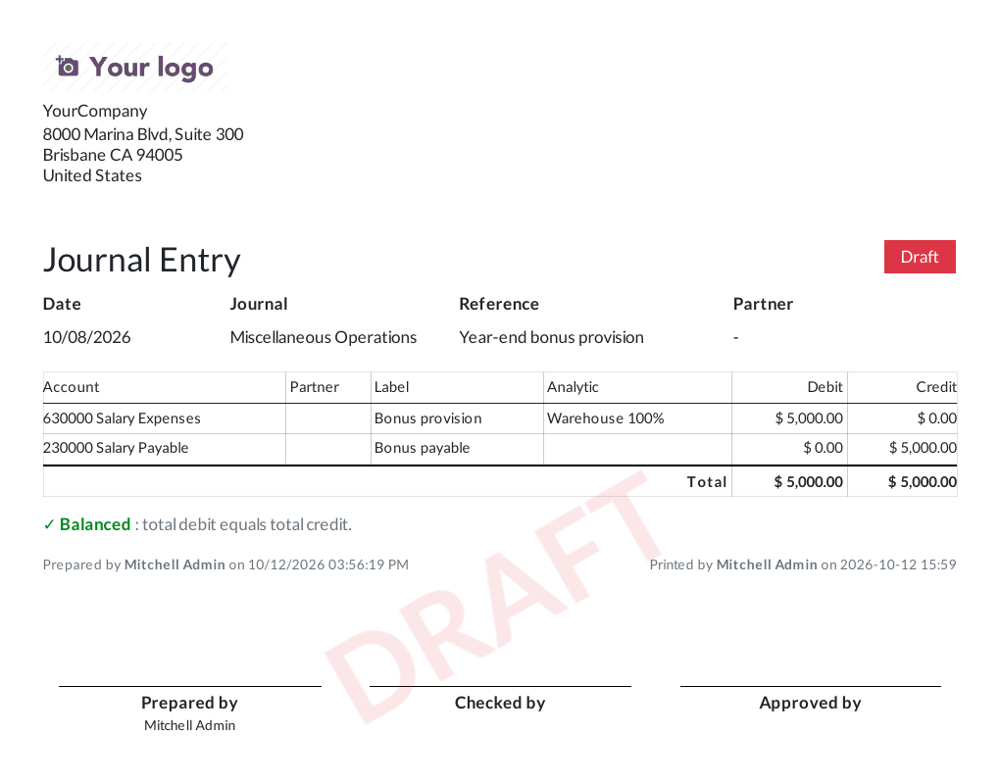

A printable voucher for any journal entry: lines, analytic split, totals, a balance check and signature boxes, one entry per page.

| Odoo | 16.0, 17.0, 18.0, 19.0, 20.0 |
| Editions | Community, Enterprise |
| Languages | English, French, Spanish, German, Italian, Portuguese (Brazil), Dutch, Chinese (Simplified), Japanese, Arabic, Russian |
| Works with | Invoicing / Accounting |
| Licence | LGPL-3, free |
| Tests | 10 automated, run on every version |
| Module | account_ |
Odoo prints invoices, bills and payment receipts. A miscellaneous entry, an accrual or a year-end provision has no PDF at all, so when your auditor or manager wants a signed voucher, someone ends up copying the lines into a spreadsheet.
This module adds a Journal Entry report to the Print menu of every entry. It shows exactly what was booked, tells you whether debit and credit match, and leaves room for the people who check and approve it to sign.
Open Apps, clear the Apps filter, search for Print Journal Entries and click Activate. It only needs Invoicing, which every accounting database already has.
Apps › account_move_journal_print › Activate
Open a journal entry, or tick several in Accounting › Journal Entries, then choose Print › Journal Entry. There is nothing to set up. The report uses your company's document layout.


Tell us what your auditor asks for and which Odoo version you run. We reply to every email.
Email odoo.expert.111@gmail.com